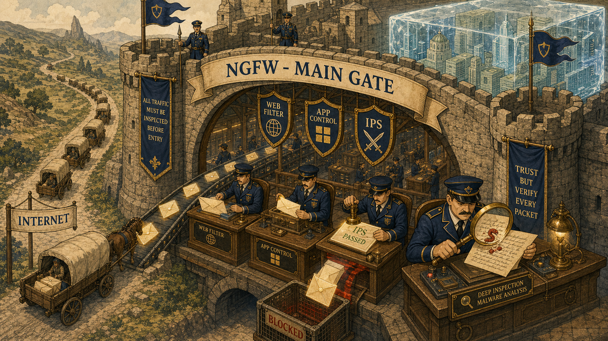
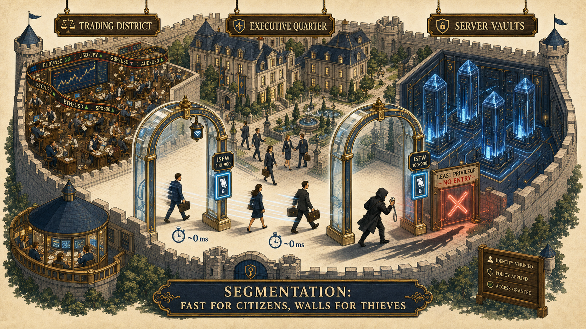
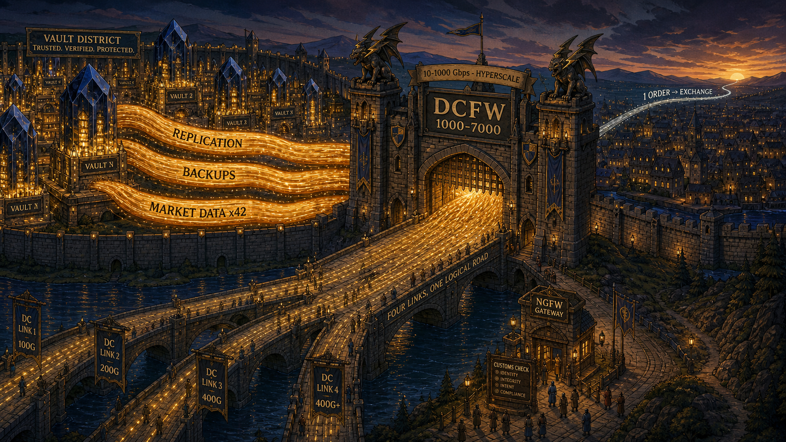
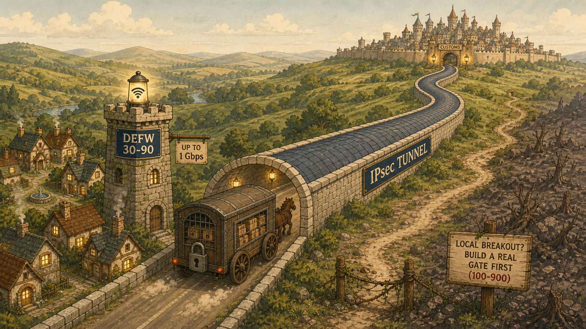
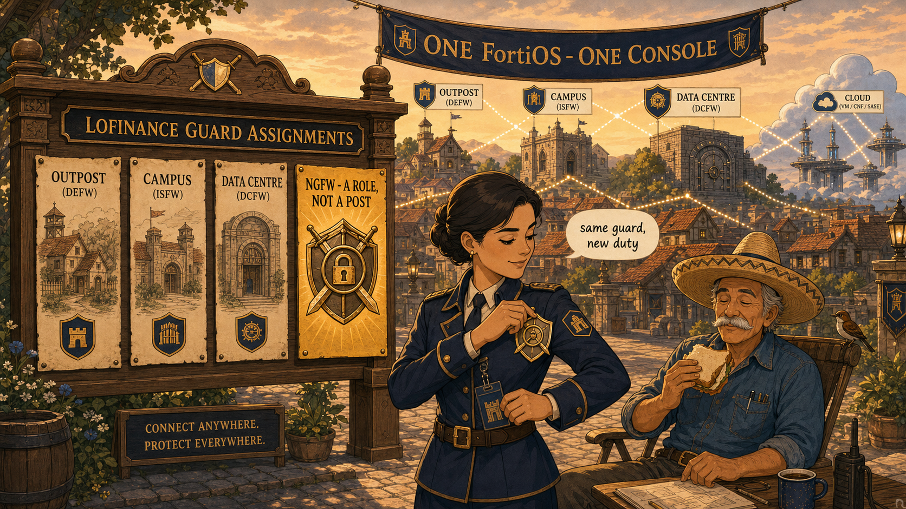

SESSION 02 · VISUAL LEARNING · MEMORY THROUGH PLACE
The Fortified City of LoFinance
Walk the city once with these images in mind and you will never again confuse where a wall belongs. Each station anchors one exam fact to one unforgettable place.
Recommended visual style: Real-World Analogy Map (fortified city) with Memory Palace stations. Session 2 is fundamentally spatial — it's about where things go — so the strongest encoding is a single coherent place you can mentally walk: village outpost → city gate → district doors → vault quarter → the guild noticeboard. A packet-journey or decision-tree style would waste this chapter's natural geography.
Station 1 — The City Gate (NGFW at the edge)
Edge job: hostile content · deep inspection · north-south
Every cart from the outside world stops here. The customs officers don't just check the address on the parcel — they open it and read the letter inside. This is where web filtering, application control and IPS live.
Memory anchorThe gate officer's magnifying glass = deep content inspection. The edge fights content.

images/v1-city-gate-customs.png
Image not found — drop the PNG at the path above.
A grand fortified city gate operating as a customs house, every arriving parcel opened and read.
Richly detailed storybook illustration, warm parchment tones with navy-blue and gold accents, isometric three-quarter view. A massive stone city gate in a high wall, banner across the arch reading "NGFW — MAIN GATE". Beneath the arch, a busy customs hall: uniformed navy officers at wooden desks opening glowing envelope-shaped parcels arriving on a conveyor from a road labelled "INTERNET"; one officer holds a large brass magnifying glass over an unfolded letter, revealing a tiny red serpent (malware) hidden in the handwriting; another stamps a parcel "IPS PASSED"; a rejected parcel drops through a trapdoor into a caged bin labelled "BLOCKED". Above the desks hang three shield crests: "WEB FILTER", "APP CONTROL", "IPS". Outside the wall: a winding road, distant hills, an approaching line of carts. Inside the gate, glimpse of a gleaming city skyline shaped like an ice cube containing stacked banknotes (the LoFinance logo as architecture). Intricate, whimsical, high detail, flat-shaded with paper texture, no photorealism, no real brand logos.
Station 2 — The District Doors (ISFW in the campus)
Internal job: lateral movement · least privilege · low latency · FG 100–900 · 1–100 Gbps
Inside the city, sleek keycard doors stand between the Trading District, the Executive Quarter and the Server Vaults. Citizens with the right badge glide through without breaking stride — near-zero delay — but a thief who slipped past the gate gets nowhere.
Memory anchorDoors that open instantly for the right badge = segmentation at low latency. Wi-Fi lanterns on the doorframes = integrated wireless LAN.

images/v2-district-keycard-doors.png
Image not found — drop the PNG at the path above.
Glass keycard doors between glowing city districts; a shadow-thief stopped mid-stride while workers flow through.
Elegant cutaway illustration of a walled city's interior, warm cream background, navy/gold/soft-teal palette, isometric view. Three luminous districts labelled on hanging wooden signs: "TRADING DISTRICT" (frantic ticker-tape ribbons in the air), "EXECUTIVE QUARTER" (stately townhouses), "SERVER VAULTS" (humming crystalline monoliths). Between districts, minimalist glass archways with glowing blue keycard panels labelled "ISFW 100–900"; office workers stride through mid-step, motion-blur speed lines and tiny stopwatch icons reading "~0 ms" to show zero delay. One archway has a small glowing Wi-Fi lantern hanging from its frame (integrated wireless). In a corridor, a hooded shadow-figure with a stolen badge is frozen by a red X hologram at a door marked "LEAST PRIVILEGE — NO ENTRY", his long shadow reaching toward the vaults but cut off cleanly at the door's threshold. Foreground plaque: "SEGMENTATION: FAST FOR CITIZENS, WALLS FOR THIEVES". Detailed, whimsical, flat-shaded storybook style with paper grain, no photorealism.
Station 3 — The Vault Quarter Gate (DCFW, hyperscale)
The vault district's internal roads carry ten times the traffic of the city gate — couriers running between vaults with replication ledgers, backup chests and market scrolls fanned out to forty-two counting houses. Its gate is as wide as a river, fed by four bridges braided into one.
Memory anchorFour bridges braided into one crossing = multiple switch links bundled into a single logical interface. The river of internal couriers = east-west >> north-south.

images/v3-vault-quarter-river-gate.png
Image not found — drop the PNG at the path above.
A colossal river-wide gate into the vault quarter; internal courier traffic dwarfs the trickle leaving the city.
Epic wide-angle storybook illustration, dusk lighting, navy and molten-gold palette, slight bird's-eye perspective. A monumental gatehouse labelled "DCFW 1000–7000" spanning a river-wide avenue into a glowing vault district of crystalline data-monoliths. The avenue TEEMS with luminous courier streams flowing horizontally between vaults — braided golden ribbons labelled "REPLICATION", "BACKUPS", "MARKET DATA ×42", visually TEN TIMES thicker than a single thin silver thread exiting over the city wall toward the horizon labelled "1 ORDER → EXCHANGE". Feeding the gatehouse: four separate stone bridges that visibly merge and braid into ONE huge bridge at the gate, engraved "FOUR LINKS, ONE LOGICAL ROAD". On the gatehouse roof, gargoyles shaped like lightning bolts (hardware acceleration) and a banner reading "10–1000 Gbps — HYPERSCALE". A tiny customs kiosk stands far in FRONT of the gate on the approach road, labelled "NGFW GATEWAY", reminding that deep inspection often happens before the vault gate. Extremely detailed, flat-shaded with paper texture, dramatic scale contrast, no photorealism, no brand logos.
Station 4 — The Village Outpost (DEFW at the branch)
FG 30–90 · ≤1 Gbps · IPsec courier road · not for deep analysis
Miles away, a small village: eight cottages, one sturdy watchtower. The tower doesn't open parcels — it seals them into an armoured courier wagon that rides a private walled road all the way back to the city's customs house, where the real inspection happens.
Memory anchorThe armoured wagon on a private walled road = the IPsec tunnel. Inspection happens at the city, not the village — unless the village digs its own road to the outside world (local breakout), in which case it needs a real gate (step up to 100–900).

images/v4-village-outpost-ipsec-road.png
Image not found — drop the PNG at the path above.
A tiny watchtower village sending sealed wagons down a private walled road to the distant city.
Charming pastoral storybook illustration, morning light, cream/sage/navy palette, gentle isometric view. Foreground: a small village of eight cottages with softly glowing windows, a modest stone watchtower labelled "DEFW 30–90" with a small Wi-Fi lantern on top and a wooden sign "UP TO 1 Gbps". From the tower, an armoured wagon sealed with a heavy padlock (parcels visible through a grille, all locked) departs onto a remarkable PRIVATE ROAD enclosed by two continuous stone walls and a roof — a walled tube-road labelled "IPsec TUNNEL" — snaking across hills to a grand distant city on the horizon whose main gate glows with customs lanterns (the NGFW from Station 1). Alongside, a faded, overgrown dirt path branching from the village directly toward wild badlands is blocked by a signpost reading "LOCAL BREAKOUT? BUILD A REAL GATE FIRST (100–900)". Whimsical, detailed, flat-shaded paper-texture style, no photorealism.
Station 5 — The Guild Noticeboard (Role ≠ Model, hybrid mesh)
The chapter's core insight, made physical
In the city square, the guild board shows every guard's assignment. The same guard who works the district doors by day can pin the customs-officer badge to her chest and work deep inspection by night. The badge is the role. The guard is the model. Nobody gets replaced — they get assigned.
Memory anchorPinning the badge = enabling UTM profiles. ISFW + badge = NGFW. Three job posts name PLACES; one names a JOB.

images/v5-guild-noticeboard-badges.png
Image not found — drop the PNG at the path above.
The guild board: same guards, interchangeable badges — and one poster that names a job, not a place.
Warm town-square scene at golden hour, storybook flat-shaded style with paper grain, navy/gold palette. A large ornate wooden noticeboard labelled "LOFINANCE GUARD ASSIGNMENTS". Pinned parchments: three posters showing PLACES — a village sketch titled "OUTPOST (DEFW)", a district-doors sketch titled "CAMPUS (ISFW)", a vault-gate sketch titled "DATA CENTRE (DCFW)" — and one distinctly different golden poster showing only a BADGE (a shield engraved with a magnifying glass, a padlock, and crossed swords) titled "NGFW — A ROLE, NOT A POST". In front of the board, a female guard in campus-door uniform is pinning the golden NGFW badge onto her chest while still holding her district-door keycard — a small speech bubble reads "same guard, new duty". Beside her, a sombrero-wearing elderly engineer sits on a folding chair eating a sandwich, a magpie perched on the chair back watching him. Background: banners strung across the square reading "ONE FortiOS · ONE CONSOLE" over rooftops of all four locations visible at once (hybrid mesh). Detailed, witty, no photorealism, no real brand logos.
The walk to run before the exam
Approach the city gate (edge, deep inspection) → glide through a district door (ISFW, least privilege, no delay) → stand before the vault-quarter river gate (DCFW, four bridges braided into one, internal river 10× the outbound thread) → ride the armoured wagon from the village (DEFW, inspection back at the city) → finish at the guild board and pin the badge (role ≠ model). Five stations, fifteen exam facts, one city.